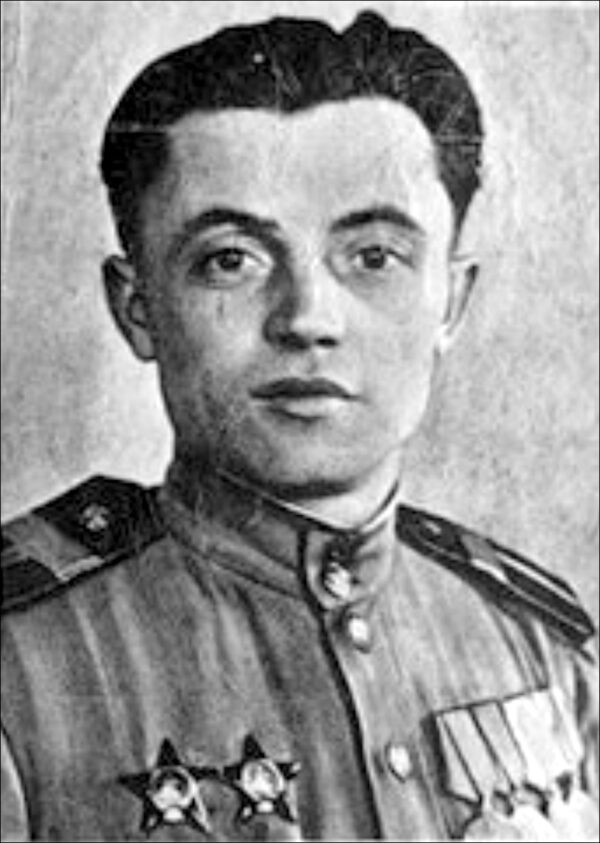

27 сентября 1942 года
Источник. «Аргументы «Нижнее Поволжье» № 42 2017 г.
Событие: 27 сентября начало обороны Дома Облпотребсоюза «Дом Павлова».
Подвиг сержанта Я. Павлова

Сержант Яков Павлов – простой парень из Новгородской глубинки. Но его имя навсегда вписано в историю города. 58 дней и ночей шла оборона самой обычной сталинградской четырехэтажки.
Яков Павлов родился 17 октября 1917 года в Новгородской области. В 1938 году был призван в Красную Армию, Великую Отечественную войну встретил в боевых частях в районе украинского Ковеля в составе Юго-Западного фронта. Это был 1941 год. В начале 1942 года Павлова направляют в 42-й Гвардейский стрелковый полк 13 –й Гвардейской дивизии генерала Александра Родимцева. Сначала принимал участие в оборонительных боях на подступах к Сталинграду. А в июле -августе старшего сержанта Павлова назначают командиром пулеметного отделения 7-й роты. С сентября 1942 года он участвует в уличных боях за Сталинград, выполняя оперативные разведывательные задания.
Вечером 27 сентября Павлов получает боевое задание командира роты лейтенанта Наумова разведать обстановку в 4-х этажном здании, выходящем на обширную площадь. Тогда она называлась площадь 9-го Января. Здание занимало важное тактическое положение – с него прекрасно просматривалась и главная волжская переправа, снабжающая 13- Гвардейскую дивизию провиантом, подкреплением, оружием, и хорошо были видны все перемещения противника. Сержант и трое бойцов – Черноголов, Глущенко, Александров - заняли и начали оборону указанного здания. Впоследствии его назовут домом Павлова. Вчетвером разведчики двое суток отбивали атаки противника. Затем пришло подкрепление – пулеметный взвод лейтенанта Ивана Афанасьева - семь человек с одним станковым пулеметом. Вместе с последующим подкреплением численность защитников дома возросла до 24 человек.
Всего в обороне дома - вместе с заменой, подкреплением, убылью и потерями- приняли участие свыше сотни бойцов. С чердака вел огонь знаменитый снайпер Анатолий Чехов. Оборона дома совершенствовалась: в северном направлении от него вырыли ход, в конце которого была площадка для станкового пулемета; а в южном ход прорыли к смотровому колодцу коммунальных сетей, где сделали площадку для бронебойщика.
На протяжении почти двух месяцев гитлеровцы атаковали здание при поддержке танков, артиллерии, минометов, авиации. Но все это время маленький гарнизон защитников дома не давал врагу пробиться к Волге. Прямые попадания снарядом разрушили одну из стен здания, но бастион продолжал сражаться. Когда немцы снесли одну из стен, Яков Павлов отчитался перед командиром шуткой. Он сообщил, что дом остался обычным, только с тремя стенами, а главное: «теперь хорошо – появилась вентиляция». 19 ноября 1942 года войска Сталинградского фронта перешли в наступление. 25 ноября Яков Павлов был ранен. После госпиталя он воевал наводчиком орудия и командиром отделения разведки в артиллерийских частях 3-го Украинского и 2-го Белорусского фронтов. Войну окончил под Берлином в звании гвардии младшего лейтенанта. Был награжден двумя орденами Красной Звезды и многими медалями. 17 июня 1945 года младшему лейтенанту Якову Федотовичу Павлову присвоено звание героя Советского Союза.